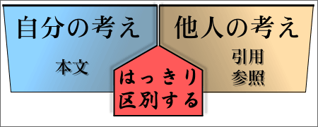

参照の示し方
引用と参照
引用には、長い引用と短い引用とがある【参照→長い引用と短い引用】。短い引用では、もとの文章をそのまま書き写すのが基本である。もとの文章をそのまま書き写す引用は、直接引用と呼ぶことができる。
一方、長い引用では、内容を要約して引用してもよい。ここでは、直接引用を『引用』、要約した引用を『参照』と呼んで区別することにする。【参照→内容を要約した引用】
なお、ここで扱うのは、主に論旨を補強するために行なう参照についてである。事実に対する証拠を示すための参照については、【→事実と証拠】を参照せよ。
参照での注意点
文献や資料を参照するときには、次の点に注意しなければならない。
◊ 内容の解釈が正当であること
参照は、他の文献や資料の内容を要約して引用するものである。直接引用するときと同じように、もともとの文献や資料の意図が正しく伝えられるようにしなければならない。
もともとの文献や資料の解釈では、ただひとつの正解があるというわけではない。そのため、解釈に多少のズレが生じるのは仕方がない。しかし、文献や資料の解釈を意図的に歪めるのは好ましくない。自分が理解した通りに書くべきである。
◊ 何を参照したのかわかること
どのような文献や資料を参照したのか、必ず書かなければならない（出典の明示）。なお、出典の書き方については、〔参照での出典の示し方〕でくわしく説明する。
◊ 必要最低限のものであること
出典を書けば、無制限に大量の参照を行なっていいというわけではない。参照でも、直接引用と同じように、必要なものを必要なだけ利用するようにすべきである。参照による記述の分量が多くなりすぎないように注意したい。
◊ 範囲がはっきりしていること
参照では、直接引用に比べて、範囲（参照がどこからはじまり、どこまでなのか）が不明瞭になりがちである。範囲が不明瞭にならないような書き方をしなければいけない。具体的な書き方については、〔参照での出典の示し方〕で説明する。
自分の考えと他人の考え
レポートでは、自分の考えと他人の考えとを明確に区別しなければならない。
まず、引用されたものが他人の考えであることは当然である。一方、たとえ自分が書き直したものでも、参照は自分の考えではない。参照は、内容を要約した引用であるから、引用と同様に他人の考えなのである。『自分が書いた文章だから、参照は自分の考えである』というのは正当ではない。
また、これは、自分の考えが参照の内容と一致していたとしても同じである。『自分の考えも参照の内容と同じだから参照は自分の考えである』というのは正当ではない。たとえ、自分の考えと一致していたとしても、参照したものは他人の考である。つまり、〈自分の考え〉とは、《他人の考とは違う自分独自の考え》ということなのである。

自分の考えと他人の考えとを区別するためには、引用や参照を行なうときに、引用や参照を行なっているという事実を明記しなければならない。また、どこからの引用や参照なのかについても明記しなければならない。これらのことは、引用や参照を行なった箇所に『出典』を明示することによって示すのがふつうである。【参照→引用の出典の示し方】
引用での出典の示し方は、「引用の出典の示し方」で説明してあるので、ここでは参照（要約した引用）の場合の出典の示し方についてくわしく説明する。
参照での出典の示し方
以下に、参照での出典の示し方について説明する。
参照部分の表記
参照部分は、本文の他の部分と同じように書けばよい。引用のように引用の部分をカギカッコ（「」）でくくったり、前後を１行あけて書いてはいけない。
一文での出典の示し方
一文以下で示される参照は、事実に対する証拠を示す場合などにしばしば用いられる。なお、事実に対する証拠については【→事実と証拠】を参照せよ。
一文での出典の示し方には、２つの方法がある。
- 文の末尾に書く
- 文のなかに書く
文の末尾に書くときは、次のようになる。
アメリカは多民族社会であるといわれるが、宗教的には９割以上がキリスト教信者なのである（玉田 2001：125-126）。
現在、世界中で使われている言語は数千にのぼり、１万人以上の話者を持つ言語はその半数ほどであるという（井上 1996：13）。
文のなかに書くときは、次のようになる。
アメリカは多民族社会であるといわれるが、玉田（2001：125-126）によれば、宗教的には９割以上がキリスト教信者なのである。
アメリカは多民族社会であるといわれるが、玉田（2001：125-126）によれば、宗教的には９割以上がキリスト教信者であるという。
井上（1996：13）は、現在、世界中で使われている言語は数千にのぼり、１万人以上の話者を持つ言語はその半数ほどであると述べている。
井上（1996：13）は、現在、世界中で使われている言語は数千にのぼり、１万人以上の話者を持つ言語はその半数ほどであると指摘している。
なお、参照の範囲が不明確な書き方は好ましくない。どこまでが参照なのかがよくわかるような書き方を工夫しなければならない。
特に、「Ａ（である）が、Ｂ」のように『が』を用いた文では、参照の範囲がわかりにくくなりやすい。そのような場合、一文ではなく、複数の文に分けて書くような工夫が必要になるかもしれない。
×悪い例
井上（1996：13）によれば、現在、世界中で使われている言語は数千にのぼるが、１万人以上の話者を持つ言語はその半数ほどである。
↑参照の範囲が『現在、世界中で使われている言語は数千にのぼる』だけなのか『現在、世界中で使われている言語は数千にのぼるが、１万人以上の話者を持つ言語はその半数ほどである』の全体なのかがわかりにくい
→○書き換え例
井上（1996：13）によれば、現在、世界中で使われている言語は数千にのぼるが、１万人以上の話者を持つ言語はその半数ほどであるという。
↑参照の範囲は『現在、世界中で使われている言語は数千にのぼるが、１万人以上の話者を持つ言語はその半数ほどである』の全体
井上（1996：13）によれば、現在、世界中で使われている言語は数千にのぼるという。しかし、１万人以上の話者を持つ言語はその半数ほどである。
↑参照の範囲は『現在、世界中で使われている言語は数千にのぼる』だけ
×悪い例
現在、世界中で使われている言語は数千にのぼるが、１万人以上の話者を持つ言語はその半数ほどであるという（井上 1996：13）。
↑参照の範囲が『１万人以上の話者を持つ言語はその半数ほどである』だけなのか『現在、世界中で使われている言語は数千にのぼるが、１万人以上の話者を持つ言語はその半数ほどである』の全体なのかがわかりにくい
→○書き換え例
現在、世界中で使われている言語は数千にのぼり、１万人以上の話者を持つ言語はその半数ほどであるという（井上 1996：13）。
↑参照の範囲は『現在、世界中で使われている言語は数千にのぼり、１万人以上の話者を持つ言語はその半数ほどである』の全体
現在、世界中で使われている言語は数千にのぼる（井上 1996：13）。しかし、１万人以上の話者を持つ言語はその半数ほどであるという（井上 1996：13）。
↑参照の範囲は『現在、世界中で使われている言語は数千にのぼる。しかし、１万人以上の話者を持つ言語はその半数ほどである』の全体
現在、世界中で使われている言語は数千にのぼる。しかし、１万人以上の話者を持つ言語はその半数ほどであるという（井上 1996：13）。
↑参照の範囲は『１万人以上の話者を持つ言語はその半数ほどである』だけ
複数の文での出典の示し方
複数の文での出典の示し方には、２つの方法がある。
- すべての文にそれぞれ出典を書く
- 「という。」「としている。」などで参照を明示する
具体的には、次のようになる。
すべての文にそれぞれ出典を書く
玉田（2001：125-126）によれば、宗教的には９割以上がキリスト教信者なのである。仏教やイスラム教、ヒンズー教など、キリスト教以外の宗教の信者は、いずれも１％に満たない（玉田2001：125-126）。しかし、特定の信仰を持たない無宗教者が増えるなど、キリスト教信者の割合は年々減少している（玉田2001：125-126）。
「という。」「としている。」などで参照を明示する
玉田（2001：125-126）によれば、宗教的には９割以上がキリスト教信者なのである。また、仏教やイスラム教、ヒンズー教など、キリスト教以外の宗教の信者は、いずれも１％に満たないとしている。しかし、特定の信仰を持たない無宗教者が増えるなど、キリスト教信者の割合は年々減少しているという。
なお、すべての文にそれぞれ出典を書く場合、出典の表記は「同書」や「前掲書」のように省略してもよい。
玉田（2001：125-126）によれば、宗教的には９割以上がキリスト教信者なのである。仏教やイスラム教、ヒンズー教など、キリスト教以外の宗教の信者は、いずれも１％に満たない（同書：125-126）。しかし、特定の信仰を持たない無宗教者が増えるなど、キリスト教信者の割合は年々減少している（同書：125-126）。
参照が複数の文にわたる場合は、参照の範囲が不明瞭にならないように注意しなければならない。
特に、参照のあとに、参照でない文が続くと、参照の範囲が不明瞭になる可能性がある。そのような場合は、参照の部分と参照でない部分とを別の段落に分けるなどの工夫が必要である。
×：良くない例
玉田（2001：125-126）によれば、宗教的には９割以上がキリスト教信者なのである。また、仏教やイスラム教、ヒンズー教など、キリスト教以外の宗教の信者は、いずれも１％に満たないとしている。しかし、特定の信仰を持たない無宗教者が増えるなど、キリスト教信者の割合は年々減少しているという。ただ、一口に無宗教と言っても、その実態は多様である。単に信仰を持たない者も無宗教だが、信仰自体に批判的な者も無宗教と呼ばれる。
↑ 「…という」までが参照だが、その直後にも文が続くので、参照の範囲がわかりにくい
→○：書き換え例
玉田（2001：125-126）によれば、宗教的には９割以上がキリスト教信者なのである。また、仏教やイスラム教、ヒンズー教など、キリスト教以外の宗教の信者は、いずれも１％に満たないとしている。しかし、特定の信仰を持たない無宗教者が増えるなど、キリスト教信者の割合は年々減少しているという。
ただ、一口に無宗教と言っても、その実態は多様である。単に信仰を持たない者も無宗教だが、信仰自体に批判的な者も無宗教と呼ばれる。
↑ 参照は「…という」までなので、それ以下を別の段落に分ける
一段落での出典の示し方
ある程度長いものを要約するような場合には、参照が（２〜３文では収まらず）一段落に渡ることがある（＝長い引用）。
一段落での出典の示し方には、２つの方法がある。ただ、２の方法では参照の範囲がわかりにくくなりやすいので、注意が必要である。
- 段落の末尾に書く
- 段落のなかに書く
段落の末尾に書くときは、段落の最後の文の後ろ（句点「。」の後ろ）に出典をカッコ書きすることで、一段落全体が参照であることを示す。具体的には、次のようになる。
＠＠＠＠＠＠＠＠＠＠＠＠＠＠＠＠＠＠＠＠＠＠。＠＠＠＠＠＠＠＠＠＠＠＠。＠＠＠＠＠＠＠＠＠＠＠＠。＠＠＠＠＠＠＠＠＠＠＠＠。（横山1986：254-255）
…………………。…………………。…………………。…………………。
出典は、段落のなかに書くこともできる。出典を段落のなかに書くときは、次のようになる。なお、参照の部分と参照でない部分とが、同じ段落内で続かないように段落を分けた方がよい。
横山（1986：254-255）は、以下のように指摘している。＠＠＠＠＠＠＠＠＠＠＠＠＠＠＠＠＠＠＠＠＠＠。＠＠＠＠＠＠＠＠＠＠＠＠。＠＠＠＠＠＠＠＠＠＠＠＠。＠＠＠＠＠＠＠＠＠＠＠＠。
…………………。…………………。…………………。…………………。
横山（1986：254-255）は、次のように述べている。＠＠＠＠＠＠＠＠＠＠＠＠＠＠＠＠＠＠＠＠＠＠。＠＠＠＠＠＠＠＠＠＠＠＠。＠＠＠＠＠＠＠＠＠＠＠＠。＠＠＠＠＠＠＠＠＠＠＠＠。
…………………。…………………。…………………。…………………。
なお、このように出典を段落のなかに書いたときには、参照の後に自分の意見をはっきりと書くなどして、参照の範囲がわかりにくくならないようにすべきである。
複数の段落での出典の示し方
参照は、内容を要約して引用するものであるから、簡潔に整理されていることが望ましい。ただ、内容が複雑であるときなど、複数の段落にわたる参照が必要とされる場合もあるだろう。
参照が複数の段落にわたる場合には、その文献を参考にした事実を本文に明記するようにする。たとえば、次のような書き方がある。
山田（1999：123f.）は、地球温暖化の影響を次のように説明している。………
山田（1999：123f.）にしたがえば、地球温暖化の影響は次のようにまとめられる。………
山田（1999：123f.）を参考にして、以下に球温暖化の影響についてまとめてみる。………
山田（1999：123f.）によれば、地球温暖化の影響は以下のようにまとめられる。………
参照と自分の意見・主張
参照は、あくまでも本文の議論を補強するために用いるものである。そのため、参照だけで具体的な議論を省略するような書き方は好ましくない。参照の後には、できるだけ自分の意見などを書くべきである。たとえば、次のような書き方がある。
山田（1999：123f.）は、地球温暖化の影響を次のように説明している。
［ここに参照を書く］
しかし、この見解には疑問がある。…………… ←反対意見を述べる
山田（1999：123f.）にしたがえば、地球温暖化の影響は次のようにまとめられる。
［ここに参照を書く］
このことから、次のような問題が指摘できる。…………… ←参照の内容を発展させる
山田（1999：123f.）を参考にして、以下に球温暖化の影響についてまとめてみる。
［ここに参照を書く］
以上からわかるように、〜〜は……なのである。 ←参照から導かれる帰結を述べる
山田（1999：123f.）によれば、地球温暖化の影響は以下のようにまとめられる。
［ここに参照を書く］
つまり、問題にすべき点は〜〜であるということができる。 ←議論のポイントを指摘する
このような書き方によって、参照の範囲を明示するとともに、参照を行なった理由（参照と本文の議論との関係）も明らかにすることができるのである。
引用と参照の示し方の比較
引用（直接引用）と参照（要約した引用）の出典の示し方
| 引用（直接引用）の場合の書き方 | 参照（要約した引用）の場合の書き方 |
| 文 |
……。「…………（山田 1999：123）」。……。
⇒ 文をカギカッコでくくって出典を書く |
……。…………（山田 1999：123）。……。
⇒ 文の終わりのマル（。）の前に出典を書く。文にカギカッコはつけない |
段落
（１つ） |
山田（1999：123f.）は、地球温暖化の影響について次のように述べている。 ……………、……………、……………。……………、………………。……………、……………、……………、……………。
したがって、地球温暖化に対して…………… ⇒ 引用の前後を１行空ける。引用の部分は２文字分右に下げる。出典は本文中に示すか、引用部分の最後に書く |
……………、……………。……………、………………。……………、……………。……………、………………。……………、……………。……………、………………。 ……………、……………、……………。……………、………………。……………、……………、……………、……………。（山田1999：123f.） ……………、……………。……………、………………。 ⇒ 段落の最後の文の後ろ（マルの後ろ）に出典を書く |
段落
（複数） |
×
⇒ 複数の段落の引用は好ましくない（長すぎる） |
例：山田（1999：123f.）は、地球温暖化の影響を次のように説明している。……………、……………。……………、………………。……
例：山田（1999：123f.）にしたがえば、地球温暖化の影響は次のようにまとめられる。……………、……………。……………、………………。……
例：山田（1999：123f.）を参考にして、球温暖化の影響についてまとめてみる。……………、……………。……………、………………。……
⇒ 文献を参考にした事実を本文に明記する |